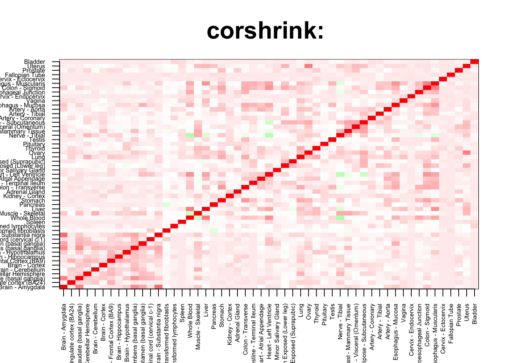

Non-brain/ Non-brain and Brain-Nonbrain
tab <- array(0, dim(corshrink_data)[3])
for(m in 1:dim(corshrink_data)[3]){
temp <- corshrink_data[order_index[-(1:13)], order_index[(1:13)],m]
temp1 <- corshrink_data[order_index[-(1:13)], order_index[-(1:13)],m]
temp_pooled <- c(c(temp), temp1[row(temp1) > col(temp1)])
tab[m] <- (quantile(temp_pooled, 0.7))
}
ordering_high <- order(tab, decreasing = TRUE)[1:1000]
ordering_low <- order(tab, decreasing = FALSE)[1:1000]top_gene <- gene_names_1[ordering_high[1]]
col=c(rev(rgb(seq(1,0,length=1000),1,seq(1,0,length=1000))),
rgb(1,seq(1,0,length=1000),seq(1,0,length=1000)))
image(as.matrix(corshrink_data[order_index,order_index, ordering_high[1000]]),
col=col, main=paste0("corshrink: "), cex.main=2,
xaxt = "n", yaxt = "n", zlim=c(-1,1))
axis(1, at = seq(0, 1, length.out = 53), labels = U[order_index], las=2, cex.axis = 0.5)
axis(2, at = seq(0, 1, length.out = 53), labels = U[order_index], las=2, cex.axis = 0.5)
bottom_gene <- gene_names_1[ordering_low[1]]
col=c(rev(rgb(seq(1,0,length=1000),1,seq(1,0,length=1000))),
rgb(1,seq(1,0,length=1000),seq(1,0,length=1000)))
image(as.matrix(corshrink_data[order_index,order_index, ordering_low[1000]]),
col=col, main=paste0("corshrink: "), cex.main=2,
xaxt = "n", yaxt = "n", zlim=c(-1,1))
axis(1, at = seq(0, 1, length.out = 53), labels = U[order_index], las=2, cex.axis = 0.5)
axis(2, at = seq(0, 1, length.out = 53), labels = U[order_index], las=2, cex.axis = 0.5)
high_non_brain_genes <- gene_names_1[ordering_high]
low_non_brain_genes <- gene_names_1[ordering_low]
write.table(cbind.data.frame(high_non_brain_genes), quote = FALSE, file = "../utilities/non_brain/high_non_brain.txt", row.names = FALSE, col.names = FALSE)
write.table(cbind.data.frame(low_non_brain_genes), quote = FALSE, file = "../utilities/non_brain/low_non_brain.txt", row.names = FALSE, col.names = FALSE)tab <- read.delim("../utilities/non_brain/pathway_high.tab")
head(cbind.data.frame(tab$pathway, tab$q.value), 100)## tab$pathway
## 1 Herpes simplex infection - Homo sapiens (human)
## 2 BMAL1:CLOCK,NPAS2 activates circadian gene expression
## 3 HSF1 activation
## 4 Antigen processing and presentation - Homo sapiens (human)
## 5 Type I diabetes mellitus - Homo sapiens (human)
## 6 Allograft Rejection
## 7 Circadian Clock
## 8 Allograft rejection - Homo sapiens (human)
## 9 Attenuation phase
## 10 Graft-versus-host disease - Homo sapiens (human)
## 11 Epstein-Barr virus infection - Homo sapiens (human)
## 12 BMAL1-CLOCK,NPAS2 activates circadian gene expression
## 13 Inflammatory bowel disease (IBD) - Homo sapiens (human)
## 14 glutathione-mediated detoxification
## 15 Influenza A - Homo sapiens (human)
## 16 Cellular response to heat stress
## 17 Nuclear Receptors Meta-Pathway
## 18 HSF1-dependent transactivation
## 19 Metallothioneins bind metals
## 20 Response to metal ions
## 21 Th17 cell differentiation - Homo sapiens (human)
## 22 Autoimmune thyroid disease - Homo sapiens (human)
## 23 Folate metabolism
## 24 Staphylococcus aureus infection - Homo sapiens (human)
## 25 Cellular responses to stress
## 26 Immune System
## 27 Viral myocarditis - Homo sapiens (human)
## 28 Neutrophil degranulation
## 29 IL12-mediated signaling events
## 30 Zinc homeostasis
## 31 <i>S</i>-methyl-5-thio-α-D-ribose 1-phosphate degradation
## 32 <i>S</i>-methyl-5-thio-α-D-ribose 1-phosphate degradation
## 33 HTLV-I infection - Homo sapiens (human)
## 34 Regulation of HSF1-mediated heat shock response
## 35 Metabolism
## 36 Asthma - Homo sapiens (human)
## 37 RORA activates gene expression
## 38 Scavenging of heme from plasma
## 39 Translocation of ZAP-70 to Immunological synapse
## 40 Endosomal/Vacuolar pathway
## 41 DEx/H-box helicases activate type I IFN and inflammatory cytokines production
## 42 Intestinal immune network for IgA production - Homo sapiens (human)
## 43 Methionine salvage pathway
## 44 Hematopoietic cell lineage - Homo sapiens (human)
## 45 Hepatitis C - Homo sapiens (human)
## 46 Oncostatin M Signaling Pathway
## 47 Phosphorylation of CD3 and TCR zeta chains
## 48 Folate Metabolism
## 49 il 4 signaling pathway
## 50 Toxoplasmosis - Homo sapiens (human)
## 51 Aryl hydrocarbon receptor signalling
## 52 Mineral absorption - Homo sapiens (human)
## 53 PD-1 signaling
## 54 Biological oxidations
## 55 Glutathione conjugation
## 56 Cellular response to heat stress
## 57 Circadian rhythm pathway
## 58 IL-4 Signaling Pathway
## 59 Binding and Uptake of Ligands by Scavenger Receptors
## 60 Association of TriC/CCT with target proteins during biosynthesis
## 61 Viral carcinogenesis - Homo sapiens (human)
## 62 NRF2 pathway
## 63 Legionellosis - Homo sapiens (human)
## 64 RIG-I/MDA5 mediated induction of IFN-alpha/beta pathways
## 65 DNA Damage/Telomere Stress Induced Senescence
## 66 ApoE and miR-146 in inflammation and atherosclerosis
## 67 Leishmaniasis - Homo sapiens (human)
## 68 Melatonin metabolism and effects
## 69 Nicotinate and nicotinamide metabolism - Homo sapiens (human)
## 70 Th1 and Th2 cell differentiation - Homo sapiens (human)
## 71 NOD-like receptor signaling pathway - Homo sapiens (human)
## 72 Circadian rhythm - Homo sapiens (human)
## 73 Oxidative Stress
## 74 MHC class II antigen presentation
## 75 Erythrocytes take up oxygen and release carbon dioxide
## 76 Glucocorticoid Pathway (Peripheral Tissue), Pharmacodynamics
## 77 Toll-like Receptor Signaling
## 78 ISG15 antiviral mechanism
## 79 Antiviral mechanism by IFN-stimulated genes
## 80 Downstream TCR signaling
## 81 Aryl Hydrocarbon Receptor
## 82 Measles - Homo sapiens (human)
## 83 dolichol and dolichyl phosphate biosynthesis
## 84 Interconversion of 2-oxoglutarate and 2-hydroxyglutarate
## 85 One carbon pool by folate - Homo sapiens (human)
## 86 RORA activates gene expression
## 87 Circadian Clock
## 88 Mammary gland development pathway - Involution (Stage 4 of 4)
## 89 Folding of actin by CCT/TriC
## 90 methionine salvage cycle III
## 91 Exercise-induced Circadian Regulation
## 92 TSLP
## 93 Chemical carcinogenesis - Homo sapiens (human)
## 94 Selenium Micronutrient Network
## 95 apoptotic dna-fragmentation and tissue homeostasis
## 96 The role of GTSE1 in G2/M progression after G2 checkpoint
## 97 Nicotinamide salvaging
## 98 Photodynamic therapy-induced AP-1 survival signaling.
## 99 JAK STAT MolecularVariation 2
## 100 Cyclin A/B1 associated events during G2/M transition
## tab$q.value
## 1 1.791216e-06
## 2 1.186294e-05
## 3 6.480762e-05
## 4 6.480762e-05
## 5 9.691122e-05
## 6 1.303588e-04
## 7 1.363329e-04
## 8 1.534770e-04
## 9 1.931660e-04
## 10 2.490865e-04
## 11 2.657210e-04
## 12 2.657210e-04
## 13 2.880417e-04
## 14 3.779925e-04
## 15 4.181433e-04
## 16 6.393057e-04
## 17 6.703435e-04
## 18 7.031494e-04
## 19 8.957069e-04
## 20 8.957069e-04
## 21 1.025550e-03
## 22 1.106181e-03
## 23 1.456424e-03
## 24 1.617968e-03
## 25 2.034945e-03
## 26 2.223945e-03
## 27 2.223945e-03
## 28 2.553045e-03
## 29 3.113572e-03
## 30 3.677864e-03
## 31 3.677864e-03
## 32 3.677864e-03
## 33 3.677864e-03
## 34 5.035847e-03
## 35 5.198519e-03
## 36 7.158281e-03
## 37 7.784589e-03
## 38 9.695938e-03
## 39 1.190163e-02
## 40 1.259346e-02
## 41 1.259346e-02
## 42 1.259346e-02
## 43 1.309672e-02
## 44 1.566263e-02
## 45 1.691942e-02
## 46 1.723349e-02
## 47 1.830844e-02
## 48 1.830844e-02
## 49 1.889198e-02
## 50 1.889198e-02
## 51 1.889198e-02
## 52 1.901580e-02
## 53 1.980922e-02
## 54 2.044376e-02
## 55 2.047971e-02
## 56 2.143405e-02
## 57 2.143405e-02
## 58 2.143405e-02
## 59 2.153313e-02
## 60 2.153313e-02
## 61 2.169111e-02
## 62 2.169111e-02
## 63 2.169111e-02
## 64 2.169111e-02
## 65 2.283585e-02
## 66 2.283585e-02
## 67 2.337007e-02
## 68 2.550407e-02
## 69 2.550407e-02
## 70 2.822188e-02
## 71 2.822188e-02
## 72 2.822188e-02
## 73 2.822188e-02
## 74 2.845243e-02
## 75 2.908353e-02
## 76 2.908353e-02
## 77 3.033524e-02
## 78 3.033524e-02
## 79 3.033524e-02
## 80 3.344268e-02
## 81 3.344268e-02
## 82 3.430391e-02
## 83 3.430391e-02
## 84 3.430391e-02
## 85 3.430391e-02
## 86 3.430391e-02
## 87 3.430391e-02
## 88 3.430391e-02
## 89 3.430391e-02
## 90 3.430391e-02
## 91 3.707935e-02
## 92 3.864725e-02
## 93 3.864725e-02
## 94 4.122997e-02
## 95 4.196547e-02
## 96 4.196547e-02
## 97 4.196547e-02
## 98 4.196547e-02
## 99 4.196547e-02
## 100 4.228525e-02pathway2 <- read.delim("../utilities/non_brain/pathway_high.tab")
maxpath = 75
pathway <- pathway2[1:min(maxpath, dim(pathway2)[1]), ]
ensembl_genes <- pathway$members_input_overlap
pathway_list_genes <- sapply(ensembl_genes, function(x) return(strsplit(as.character(x), "; ")))
all_genes <- Reduce(union, pathway_list_genes)
pathway_mat <- matrix(0, length(pathway_list_genes), length(all_genes))
for(l in 1:dim(pathway_mat)[1]){
pathway_mat[l, match(pathway_list_genes[[l]], all_genes)] <- 1
}
pathway_bimat <- (pathway_mat)%*%t(pathway_mat)
pathway_bimat_prop <- diag(1/sqrt(diag(pathway_bimat)), dim(pathway_bimat)[1]) %*% pathway_bimat %*% diag(1/sqrt(diag(pathway_bimat)), dim(pathway_bimat)[1])
col=c(rev(rgb(seq(1,0,length=1000),1,seq(1,0,length=1000))),
rgb(1,seq(1,0,length=1000),seq(1,0,length=1000)))
heatmap(pathway_bimat_prop, labRow = pathway$pathway, labCol = pathway$pathway, cexRow = 0.3, cexCol = 0.3, col = col, zlim = c(-1,1),
scale = "none", margins = c(5, 5))tab <- read.delim("../utilities/non_brain/GO_high.tab")
head(cbind.data.frame(tab$term_name, tab$q.value), 100)## tab$term_name
## 1 type I interferon signaling pathway
## 2 response to type I interferon
## 3 MHC protein complex
## 4 interferon-gamma-mediated signaling pathway
## 5 response to cytokine
## 6 response to interferon-gamma
## 7 intracellular membrane-bounded organelle
## 8 cellular response to cytokine stimulus
## 9 cytokine-mediated signaling pathway
## 10 lumenal side of endoplasmic reticulum membrane
## 11 integral component of lumenal side of endoplasmic reticulum membrane
## 12 peptide antigen binding
## 13 response to stress
## 14 innate immune response
## 15 response to virus
## 16 response to biotic stimulus
## 17 transferase activity, transferring one-carbon groups
## 18 response to external biotic stimulus
## 19 response to other organism
## 20 methyltransferase activity
## 21 MHC class II protein complex
## 22 xenobiotic catabolic process
## 23 defense response
## 24 cytoplasmic part
## 25 membrane-bounded organelle
## 26 RAGE receptor binding
## 27 hemoglobin complex
## 28 protein folding
## 29 cytokine production
## 30 defense response to other organism
## 31 cellular detoxification of nitrogen compound
## 32 haptoglobin binding
## 33 nitrogen compound metabolic process
## 34 intracellular organelle
## 35 amide binding
## 36 defense response to virus
## 37 oxygen transporter activity
## 38 ER to Golgi transport vesicle membrane
## 39 immune effector process
## 40 unfolded protein binding
## 41 I-kappaB/NF-kappaB complex
## 42 response to temperature stimulus
## 43 immune response
## 44 cellular detoxification
## 45 cellular modified amino acid metabolic process
## 46 adaptive immune response based on somatic recombination of immune receptors built from immunoglobulin superfamily domains
## 47 viral process
## 48 interferon-gamma production
## 49 multi-organism cellular process
## 50 negative regulation of viral process
## 51 intracellular
## 52 nitrobenzene metabolic process
## 53 haptoglobin-hemoglobin complex
## 54 peptidyl-lysine 5-dioxygenase activity
## 55 symbiosis, encompassing mutualism through parasitism
## 56 intracellular part
## 57 circadian rhythm
## 58 endocytic vesicle lumen
## 59 response to heat
## 60 interspecies interaction between organisms
## 61 oxygen binding
## 62 chaperone-mediated protein folding
## 63 negative regulation of multi-organism process
## 64 T-helper 1 type immune response
## 65 alpha-amino acid metabolic process
## 66 viral genome replication
## 67 mitochondrion
## 68 cellular aromatic compound metabolic process
## 69 intracellular organelle lumen
## 70 gas transport
## 71 organelle lumen
## 72 MHC class II receptor activity
## 73 MHC class I protein complex
## 74 aspartate family amino acid metabolic process
## 75 detoxification of nitrogen compound
## 76 purine deoxyribonucleotide binding
## 77 alpha-amino acid biosynthetic process
## 78 antigen binding
## 79 cellular nitrogen compound metabolic process
## 80 nuclear part
## 81 circadian regulation of gene expression
## 82 carboxylic acid metabolic process
## 83 regulation of cytokine production
## 84 response to zinc ion
## 85 S-adenosylmethionine-dependent methyltransferase activity
## 86 cytokine production involved in immune response
## 87 response to organic substance
## 88 organic cyclic compound metabolic process
## 89 condensed chromosome
## 90 cellular response to heat
## 91 glutathione derivative metabolic process
## 92 glutathione derivative biosynthetic process
## 93 female gamete generation
## 94 deoxyribonucleotide binding
## 95 regulation of type I interferon production
## 96 glutathione transferase activity
## 97 peptide binding
## 98 type I interferon production
## 99 cellular response to chemical stimulus
## 100 regulation of interferon-gamma production
## tab$q.value
## 1 1.525800e-08
## 2 1.822588e-08
## 3 3.758830e-07
## 4 1.049031e-06
## 5 2.877048e-05
## 6 1.319718e-05
## 7 7.163943e-06
## 8 1.328419e-05
## 9 4.142516e-05
## 10 7.163943e-06
## 11 5.937683e-06
## 12 2.804277e-05
## 13 4.458052e-05
## 14 2.571765e-04
## 15 7.095991e-05
## 16 9.861193e-05
## 17 1.330896e-04
## 18 5.429870e-04
## 19 6.615367e-04
## 20 4.643775e-04
## 21 1.140123e-04
## 22 9.961240e-04
## 23 9.763428e-04
## 24 2.998339e-04
## 25 6.870070e-04
## 26 6.931635e-04
## 27 4.870266e-04
## 28 6.605068e-04
## 29 2.121322e-03
## 30 3.430940e-03
## 31 2.121322e-03
## 32 1.086391e-03
## 33 7.765028e-04
## 34 1.324507e-03
## 35 1.682328e-03
## 36 2.561959e-03
## 37 1.201510e-03
## 38 2.477129e-03
## 39 8.301683e-04
## 40 1.251092e-03
## 41 1.227010e-03
## 42 2.997287e-03
## 43 8.301683e-04
## 44 8.301683e-04
## 45 3.024974e-03
## 46 7.828724e-03
## 47 3.305709e-03
## 48 7.828724e-03
## 49 1.062632e-03
## 50 7.802245e-03
## 51 1.991149e-03
## 52 3.634763e-03
## 53 2.067251e-03
## 54 1.016864e-02
## 55 3.634763e-03
## 56 1.991149e-03
## 57 1.166773e-03
## 58 1.851177e-03
## 59 3.634763e-03
## 60 1.166773e-03
## 61 2.674637e-03
## 62 3.634763e-03
## 63 1.115636e-02
## 64 1.159270e-02
## 65 1.242878e-02
## 66 1.258988e-02
## 67 7.106357e-03
## 68 5.595076e-03
## 69 3.398795e-03
## 70 1.329046e-02
## 71 2.993315e-03
## 72 9.008439e-03
## 73 2.784009e-03
## 74 1.591837e-02
## 75 2.332764e-03
## 76 9.008439e-03
## 77 1.591837e-02
## 78 3.947725e-03
## 79 7.074489e-03
## 80 4.328293e-03
## 81 7.534219e-03
## 82 1.732006e-02
## 83 1.872315e-02
## 84 1.773634e-02
## 85 1.706871e-02
## 86 8.014476e-03
## 87 8.014476e-03
## 88 8.014476e-03
## 89 3.975215e-03
## 90 2.191720e-02
## 91 8.395129e-03
## 92 2.191720e-02
## 93 2.329095e-02
## 94 1.013699e-02
## 95 2.633473e-02
## 96 1.616739e-02
## 97 1.033270e-02
## 98 2.750663e-02
## 99 1.154542e-02
## 100 2.633473e-02tab <- read.delim("../utilities/non_brain/pathway_low.tab")
head(cbind.data.frame(tab$pathway, tab$q.value), 100)## tab$pathway
## 1 Muscle contraction
## 2 Developmental Biology
## 3 Smooth Muscle Contraction
## 4 Primary Focal Segmental Glomerulosclerosis FSGS
## 5 Extracellular matrix organization
## 6 Axon guidance
## 7 Myometrial Relaxation and Contraction Pathways
## 8 Striated Muscle Contraction
## 9 Arrhythmogenic Right Ventricular Cardiomyopathy
## 10 Dilated cardiomyopathy - Homo sapiens (human)
## 11 Proteoglycans in cancer - Homo sapiens (human)
## 12 Arrhythmogenic right ventricular cardiomyopathy (ARVC) - Homo sapiens (human)
## 13 Netrin-1 signaling
## 14 Tight junction - Homo sapiens (human)
## 15 Vascular smooth muscle contraction - Homo sapiens (human)
## 16 Integrin
## 17 Cell-Cell communication
## 18 Hypertrophic cardiomyopathy (HCM) - Homo sapiens (human)
## 19 Elastic fibre formation
## 20 EPH-Ephrin signaling
## 21 Beta-catenin independent WNT signaling
## 22 Beta5 beta6 beta7 and beta8 integrin cell surface interactions
## 23 Integrin cell surface interactions
## 24 Semaphorin interactions
## 25 EGFR1
## 26 Regulation of actin cytoskeleton - Homo sapiens (human)
## 27 Ca2+ pathway
## 28 Molecules associated with elastic fibres
## 29 Platelet activation, signaling and aggregation
## 30 Focal adhesion - Homo sapiens (human)
## 31 Calcium signaling pathway - Homo sapiens (human)
## 32 Keratinization
## 33 Cell adhesion molecules (CAMs) - Homo sapiens (human)
## 34 Reversible hydration of carbon dioxide
## 35 G Protein Signaling Pathways
## 36 Hemostasis
## 37 EPHA-mediated growth cone collapse
## 38 Calcium Regulation in the Cardiac Cell
## 39 Signaling by Wnt
## 40 Sema4D induced cell migration and growth-cone collapse
## 41 Axon guidance - Homo sapiens (human)
## 42 Beta-agonist/Beta-blocker Pathway, Pharmacodynamics
## 43 Hypothesized Pathways in Pathogenesis of Cardiovascular Disease
## 44 TGF-beta signaling pathway - Homo sapiens (human)
## 45 G13 Signaling Pathway
## 46 DCC mediated attractive signaling
## 47 Cell junction organization
## 48 Effects of PIP2 hydrolysis
## 49 Sema4D in semaphorin signaling
## 50 Antiarrhythmic Pathway, Pharmacodynamics
## 51 Adherens junction - Homo sapiens (human)
## 52 ucalpain and friends in cell spread
## 53 Nitrogen metabolism - Homo sapiens (human)
## 54 NOTCH1 regulation of human endothelial cell calcification
## 55 RHO GTPases activate CIT
## 56 Platelet homeostasis
## 57 Rap1 signaling pathway - Homo sapiens (human)
## 58 Adrenergic signaling in cardiomyocytes - Homo sapiens (human)
## 59 EPHB-mediated forward signaling
## 60 cGMP effects
## 61 erk and pi-3 kinase are necessary for collagen binding in corneal epithelia
## 62 Cell-cell junction organization
## 63 Bopindolol Action Pathway
## 64 Timolol Action Pathway
## 65 Carteolol Action Pathway
## 66 Bevantolol Action Pathway
## 67 Practolol Action Pathway
## 68 Dobutamine Action Pathway
## 69 Isoprenaline Action Pathway
## 70 Arbutamine Action Pathway
## 71 Levobunolol Action Pathway
## 72 Metipranolol Action Pathway
## 73 Sotalol Action Pathway
## 74 Epinephrine Action Pathway
## 75 Betaxolol Action Pathway
## 76 Atenolol Action Pathway
## 77 Alprenolol Action Pathway
## 78 Acebutolol Action Pathway
## 79 Propranolol Action Pathway
## 80 Pindolol Action Pathway
## 81 Penbutolol Action Pathway
## 82 Oxprenolol Action Pathway
## 83 Metoprolol Action Pathway
## 84 Esmolol Action Pathway
## 85 Bisoprolol Action Pathway
## 86 Bupranolol Action Pathway
## 87 Nebivolol Action Pathway
## 88 Nadolol Action Pathway
## 89 Muscle/Heart Contraction
## 90 Diltiazem Action Pathway
## 91 Amlodipine Action Pathway
## 92 Verapamil Action Pathway
## 93 Nitrendipine Action Pathway
## 94 Nisoldipine Action Pathway
## 95 Nimodipine Action Pathway
## 96 Isradipine Action Pathway
## 97 Nifedipine Action Pathway
## 98 Felodipine Action Pathway
## 99 Amiodarone Action Pathway
## 100 Ibutilide Action Pathway
## tab$q.value
## 1 7.777017e-06
## 2 7.777017e-06
## 3 1.171990e-05
## 4 3.636221e-05
## 5 6.039905e-05
## 6 7.707865e-05
## 7 7.707865e-05
## 8 1.251704e-04
## 9 1.399622e-04
## 10 1.559372e-04
## 11 1.891910e-04
## 12 5.319165e-04
## 13 6.483768e-04
## 14 6.901578e-04
## 15 6.901578e-04
## 16 8.595099e-04
## 17 1.272777e-03
## 18 1.424676e-03
## 19 2.815169e-03
## 20 3.978363e-03
## 21 4.150147e-03
## 22 4.150147e-03
## 23 5.217979e-03
## 24 5.217979e-03
## 25 5.529549e-03
## 26 5.954987e-03
## 27 6.248037e-03
## 28 6.613002e-03
## 29 6.885019e-03
## 30 7.795059e-03
## 31 7.795059e-03
## 32 7.795059e-03
## 33 7.870901e-03
## 34 8.307815e-03
## 35 9.100969e-03
## 36 1.021568e-02
## 37 1.021568e-02
## 38 1.021568e-02
## 39 1.275413e-02
## 40 1.326533e-02
## 41 1.436952e-02
## 42 1.436952e-02
## 43 1.506188e-02
## 44 1.573727e-02
## 45 1.573727e-02
## 46 1.580372e-02
## 47 1.701449e-02
## 48 1.701449e-02
## 49 1.701449e-02
## 50 1.701449e-02
## 51 1.701449e-02
## 52 1.701449e-02
## 53 1.701449e-02
## 54 1.701449e-02
## 55 1.701449e-02
## 56 1.701449e-02
## 57 1.701449e-02
## 58 1.701449e-02
## 59 1.701449e-02
## 60 1.701449e-02
## 61 1.701449e-02
## 62 1.701449e-02
## 63 1.701449e-02
## 64 1.701449e-02
## 65 1.701449e-02
## 66 1.701449e-02
## 67 1.701449e-02
## 68 1.701449e-02
## 69 1.701449e-02
## 70 1.701449e-02
## 71 1.701449e-02
## 72 1.701449e-02
## 73 1.701449e-02
## 74 1.701449e-02
## 75 1.701449e-02
## 76 1.701449e-02
## 77 1.701449e-02
## 78 1.701449e-02
## 79 1.701449e-02
## 80 1.701449e-02
## 81 1.701449e-02
## 82 1.701449e-02
## 83 1.701449e-02
## 84 1.701449e-02
## 85 1.701449e-02
## 86 1.701449e-02
## 87 1.701449e-02
## 88 1.701449e-02
## 89 1.701449e-02
## 90 1.701449e-02
## 91 1.701449e-02
## 92 1.701449e-02
## 93 1.701449e-02
## 94 1.701449e-02
## 95 1.701449e-02
## 96 1.701449e-02
## 97 1.701449e-02
## 98 1.701449e-02
## 99 1.701449e-02
## 100 1.701449e-02pathway2 <- read.delim("../utilities/non_brain/pathway_low.tab")
maxpath = 75
pathway <- pathway2[1:min(maxpath, dim(pathway2)[1]), ]
ensembl_genes <- pathway$members_input_overlap
pathway_list_genes <- sapply(ensembl_genes, function(x) return(strsplit(as.character(x), "; ")))
all_genes <- Reduce(union, pathway_list_genes)
pathway_mat <- matrix(0, length(pathway_list_genes), length(all_genes))
for(l in 1:dim(pathway_mat)[1]){
pathway_mat[l, match(pathway_list_genes[[l]], all_genes)] <- 1
}
pathway_bimat <- (pathway_mat)%*%t(pathway_mat)
pathway_bimat_prop <- diag(1/sqrt(diag(pathway_bimat)), dim(pathway_bimat)[1]) %*% pathway_bimat %*% diag(1/sqrt(diag(pathway_bimat)), dim(pathway_bimat)[1])
col=c(rev(rgb(seq(1,0,length=1000),1,seq(1,0,length=1000))),
rgb(1,seq(1,0,length=1000),seq(1,0,length=1000)))
heatmap(pathway_bimat_prop, labRow = pathway$pathway, labCol = pathway$pathway, cexRow = 0.3, cexCol = 0.3, col = col, zlim = c(-1,1),
scale = "none", margins = c(5, 5))tab <- read.delim("../utilities/non_brain/GO_low.tab")
head(cbind.data.frame(tab$term_name, tab$q.value), 100)## tab$term_name tab$q.value
## 1 cytoskeletal protein binding 1.098524e-15
## 2 anatomical structure morphogenesis 1.793176e-15
## 3 actin filament-based process 1.433205e-14
## 4 actin cytoskeleton 6.556934e-15
## 5 anatomical structure development 1.222939e-14
## 6 single-organism developmental process 1.222939e-14
## 7 actin binding 9.109185e-14
## 8 tissue development 4.073164e-13
## 9 system development 6.390964e-13
## 10 cellular developmental process 6.390964e-13
## 11 muscle system process 6.390964e-13
## 12 protein binding 5.010433e-13
## 13 cell differentiation 6.437246e-12
## 14 actin cytoskeleton organization 6.437246e-12
## 15 cytoskeleton organization 6.437246e-12
## 16 contractile fiber part 2.652630e-12
## 17 contractile fiber 4.828328e-12
## 18 regulation of multicellular organismal process 5.237610e-12
## 19 cell development 9.695118e-12
## 20 multicellular organism development 2.352917e-11
## 21 regulation of localization 3.200099e-11
## 22 single-organism cellular process 2.314404e-11
## 23 muscle contraction 2.125638e-10
## 24 single-multicellular organism process 4.154207e-11
## 25 animal organ development 9.334314e-11
## 26 muscle structure development 9.334314e-11
## 27 cell-cell junction 7.670988e-11
## 28 myofibril 4.798947e-11
## 29 supramolecular polymer 7.670988e-11
## 30 movement of cell or subcellular component 1.204692e-10
## 31 regulation of cell projection organization 4.449322e-09
## 32 regulation of developmental process 2.424961e-10
## 33 regulation of cell differentiation 1.665483e-09
## 34 vesicle 1.092038e-09
## 35 cell adhesion 1.657814e-10
## 36 single organism signaling 1.720435e-10
## 37 regulation of cell development 5.444465e-09
## 38 supramolecular fiber 1.092038e-09
## 39 cell periphery 3.915697e-10
## 40 cell communication 2.647381e-10
## 41 I band 1.158594e-09
## 42 sarcomere 1.158594e-09
## 43 regulation of cellular component movement 5.841584e-09
## 44 regulation of multicellular organismal development 5.841584e-09
## 45 regulation of cell motility 6.685842e-09
## 46 anchoring junction 1.184817e-09
## 47 plasma membrane 1.397095e-09
## 48 regulation of cell morphogenesis 2.319620e-08
## 49 actomyosin structure organization 2.319620e-08
## 50 positive regulation of cell differentiation 2.319620e-08
## 51 regulation of cellular component organization 1.804447e-08
## 52 regulation of nervous system development 2.339498e-08
## 53 cellular component morphogenesis 6.860473e-09
## 54 tissue morphogenesis 6.860473e-09
## 55 extracellular matrix organization 1.932707e-08
## 56 extracellular structure organization 7.104476e-09
## 57 supramolecular fiber organization 1.072909e-08
## 58 regulation of locomotion 1.107804e-08
## 59 cytoskeleton 3.403524e-08
## 60 protein complex binding 2.869645e-08
## 61 positive regulation of developmental process 5.221999e-08
## 62 calmodulin binding 2.869645e-08
## 63 cell motility 8.089224e-09
## 64 localization of cell 8.089224e-09
## 65 adherens junction 2.125593e-08
## 66 regulation of anatomical structure morphogenesis 7.818142e-08
## 67 positive regulation of cellular component movement 1.189329e-07
## 68 cell migration 2.819894e-08
## 69 Z disc 3.003858e-08
## 70 actomyosin 5.759856e-08
## 71 regulation of cell communication 1.396181e-07
## 72 regulation of system process 1.660758e-07
## 73 positive regulation of locomotion 1.798802e-07
## 74 muscle cell differentiation 3.253974e-07
## 75 cell junction organization 9.868179e-08
## 76 regulation of signaling 1.288582e-07
## 77 intracellular signal transduction 1.288582e-07
## 78 extracellular exosome 1.851033e-07
## 79 cell-cell junction organization 3.659158e-07
## 80 actin filament binding 5.553683e-07
## 81 neurogenesis 6.308078e-07
## 82 extracellular vesicle 1.504263e-07
## 83 extracellular organelle 1.006938e-07
## 84 actin filament-based movement 5.658382e-07
## 85 cell-cell adhesion 2.420934e-07
## 86 plasma membrane part 1.372381e-07
## 87 cell morphogenesis 7.469746e-07
## 88 contractile actin filament bundle 2.357492e-07
## 89 signal transduction 1.753608e-07
## 90 tissue migration 4.147534e-07
## 91 cytoplasm 3.546736e-07
## 92 neuron part 2.415681e-07
## 93 apical part of cell 2.415681e-07
## 94 actin-based cell projection 4.450014e-07
## 95 plasma membrane region 3.089600e-07
## 96 actin filament bundle 9.983470e-07
## 97 heart development 8.270315e-07
## 98 cell projection organization 8.466374e-07
## 99 neuron differentiation 3.547692e-06
## 100 cell morphogenesis involved in differentiation 3.547692e-06